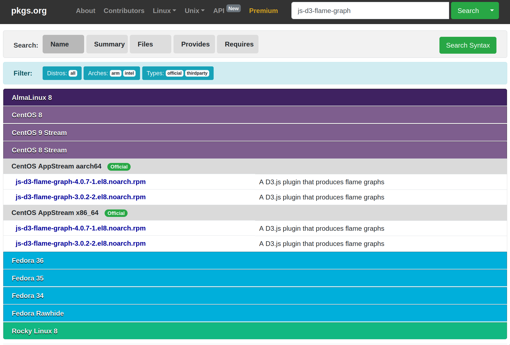
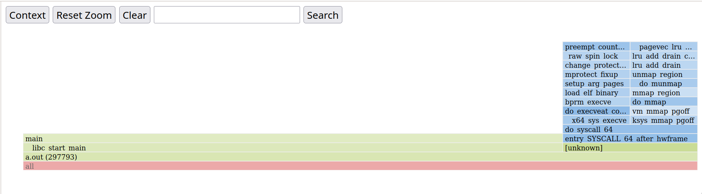

title: Perf 笔记 date: 2023-10-01 17:48:39
tags:
Perf 笔记
环境 Linux Syameimaru-Aya 5.17.0-2-amd64 #1 SMP PREEMPT Debian 5.17.6-1 (2022-05-11) x86_64 GNU/Linux。
配置环境
首先安装 linux-perf 软件包，获得 perf(1) 应用程序。
接着运行 perf，发现报了奇怪的错误：
19:56 Syameimaru-Aya ~/sr/la/hpc/perf
0 perf record -a ./a.out
Error:
Access to performance monitoring and observability operations is limited.
Consider adjusting /proc/sys/kernel/perf_event_paranoid setting to open
access to performance monitoring and observability operations for processes
without CAP_PERFMON, CAP_SYS_PTRACE or CAP_SYS_ADMIN Linux capability.
More information can be found at 'Perf events and tool security' document:
https://www.kernel.org/doc/html/latest/admin-guide/perf-security.html
perf_event_paranoid setting is 3:
-1: Allow use of (almost) all events by all users
Ignore mlock limit after perf_event_mlock_kb without CAP_IPC_LOCK
>= 0: Disallow raw and ftrace function tracepoint access
>= 1: Disallow CPU event access
>= 2: Disallow kernel profiling
To make the adjusted perf_event_paranoid setting permanent preserve it
in /etc/sysctl.conf (e.g. kernel.perf_event_paranoid = <setting>)
跟着报错提示里面提到的文档 Perf events and tool security 看了一圈，大概知道问题出在 perf 的安全措施上。文档里说，随意使用 perf 可能允许人获得其他人正在运行的程序中的数据，不安全。我用的发行版就默认配置成所有人都不能使用 perf 了。
文档给了一种多用户时控制权限，只让特定的人使用 perf 的做法：首先将 /usr/bin/perf 用 setcap(8) 程序加上 CAP_PERFMON CAP_SYS_PTRACE 两个标签，使 /usr/bin/perf 能够正常使用（没有 CAP_PERFMON 标签的应用程序无法调用 perf_event_open(2) 函数）。接着新建个用户组，仅使在那个组里的用户拥有 /usr/bin/perf 的可执行权限。这样对于一个不允许使用 perf 的人来说，外面偷来的 perf 会因为没有 CAP_PERFMON 而无法使用，自带的 /usr/bin/perf 则没有执行权限。整个设置避免了未经许可的人使用 perf 程序。
因为我的笔记本电脑肯定只有我一个用户，所以我非常暴力地改了一发，在 root 权限下往 /proc/sys/kernel/perf_event_paranoid 文件里写了个 -1。接着在 /etc/sysctl.conf 里加入一行 kernel.perf_event_paranoid = -1。
root@Syameimaru-Aya:~/tmp# echo -1 > /proc/sys/kernel/perf_event_paranoid
root@Syameimaru-Aya:~/tmp#
接着 perf 就可以正常运行了。
20:27 Syameimaru-Aya ~/sr/la/hpc/perf
0 cat a.c
#include <stdio.h>
int main(void) {
int i;
for (i = 0; i < 10000000; ++i)
i + i;
return 0;
}
20:27 Syameimaru-Aya ~/sr/la/hpc/perf
0 gcc -O0 a.c && perf record -a ./a.out
[ perf record: Woken up 1 times to write data ]
[ perf record: Captured and wrote 0.877 MB perf.data (104 samples) ]
获得炫酷火焰图
中午午睡的时候梦到生成火焰图要用命令 perf script flamegraph。于是试了一下，发现不行。
20:29 Syameimaru-Aya ~/sr/la/hpc/perf
0 perf script flamegraph
------------------------------------------------------------
perf_event_attr:
size 128
{ sample_period, sample_freq } 4000
... 超级长的输出 ...
Flame Graph template /usr/share/d3-flame-graph/d3-flamegraph-base.html does not exist. Please install the js-d3-flame-graph (RPM) or libjs-d3-flame-graph (deb) package, specify an existing flame graph template (--template PATH) or another output format (--format FORMAT).
啊报错说缺少包 libjs-d3-flame-graph。太良心了，连缺什么包都给提示好。显得我很笨的样子 :(。
20:33 Syameimaru-Aya ~/sr/la/hpc/perf
0 i libjs-d3-flame-graph
Reading package lists... Done
Building dependency tree... Done
Reading state information... Done
E: Unable to locate package libjs-d3-flame-graph
提示说包不存在。用 apt-file 找了下报错信息中提到的关键文件 /usr/share/d3-flame-graph/d3-flamegraph-base.html，发现源里没有这个东西。不过在 pkgs.org 上找了下发现 rpm 的包到是有……怀疑开发都写报错信息的时候只是把红帽系打包的命名习惯改成了 Debian 系的，估计根本就没看有没有这个包吧！

最后用 alien(1p) 把 rpm 转成 deb 装上。成功运行。
